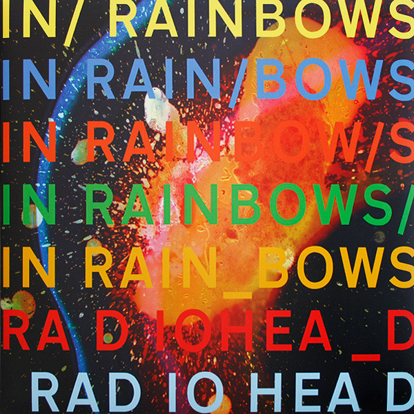

1. Radiohead - In Rainbows (2007)

With their seventh studio record. the English Art-Rock band wanted to make a departure from their previously fearful records with the beautifully-warm sonic pallete of In Rainbows. A combination of joyful instrumentation, crystal-clear production by Nigel Godrich in conjuction optimistic lyrics and ecstatic melodies by vocalist Thom Yorke produces this deeply immersive experience of the record. This gave listeners a new experience compared to previous records.
In addition to new musical fronts, the method of release was revolutionary. In 2007, the rise of peer-to-peer (P2P) file-sharing networks was gaining momentum, both in popularity and controversy. Left and right, file-sharing networks such as Napster and Limewire were under legal threat, along with all it's wide user-base. In thie midst of all of this, Radiohead decided to release the record on their website, utilising a "pay what you want" purchasing scheme. As it sounds, fans could download the album for any price they felt was appropriate, including free of charge. Ironically, the band made more revenue on this album than most of their previous work, as they released it independently, freeing them from record-label fees.
2. Tame Impala - Currents (2015)
After two succesful records, Innerspeaker and Lonerism, the Australian band released their third record: Currents. Like the previous two, the record was entirely written, recorded, produced and for the first time was purely mixed by the main member, Kevin Parker. It was also the band's first departure from psychadelic indie-rock and a fresh step into nostalgic synth-pop, disco, R&B, and dance. The album is more synth-based, and incorporates a vocoder, as opposed to the previous guitar-centric records of before.
Lyrically, the record is about change. Personal transition, growing older, and experiencing life are the primary motifs. Parker comments:
"It's really me talking to myself, another part of myself... to my old self, the part of me
that resists change and wants me to stay as I am." - Kevin Parker [Matt Fink (April 2015). "Tame Impala: Perfect Sounds Forever". Under the Radar (53). pp. 68–75.]
The record was met with great critical acclaim along with it's hit single: The Less I Know The Better and the seven-and-a-half dream ballad Let It Happen.
3. Neutral Milk Hotel - In the Aeroplane Over the Sea (1998)

Widely regarded as one of the best albums of both the 1990s and of all time, In the Aeroplane Over The Sea. Pitchfork deemed the record as "just as catchy as it is frightening" and elegantly combines the style of "Sgt. Pepper with early 90s lo-fi". The record has recently had a resurgence in fringe crouds as it was the sixth best-selling vinyl album in 2008
The instrumental and arrangement choices of this album make it just as ecclectic as exciting. The folk-influences of the record come through very prominently but also jumps quickly to almost head-banging punk-rock. The album also features many strange instruments, such as a musical saw, the Uilleann pipes, and the euphonium.
Songwriter Jeff Mangum wrote much of the album about Holocaust victim Anne Frank. Before the recording of the band's first record, Mangum read The Diary of a Young Girl, the diary kept by Anne during the Nazi occupation of the Netherlands. The book deeply affected him and moved him deeply, inspiring the majority of this album.
Links: